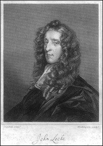

|  |
The John Locke Manuscripts is a guide to the manuscript papers of John Locke.
It consists of two major sections:
The Chronological Listing lists individual manuscript pieces under the year in which they were most likely written. It expands upon a similar list published by H. A. S. Schankula in “A summary catalogue of the philosophical manuscript papers of John Locke” (1973, with additions and corrections 1974). However, this list is not limited to the philosophical manuscripts.
One of the major features of the description of each piece – and indeed the origin of this project – is the listing of publications in which a transcription (or a translation) of the piece has appeared. These lists are linked to the corresponding items in the John Locke Bibliography. Similarly, references to manuscript pieces in the Bibliography are linked to the description in John Locke Manuscripts. Distinctive linking colors are used: links to the John Locke Bibliography are in brown; links to the John Locke Manuscripts are in green. For an example, see the listing for Locke’s paper “For a Generall Naturalization,” which is cross-linked with a number of items in the John Locke Bibliography.
The entry for each manuscript piece includes: (a) the title or titles of the piece (both those taken from the manuscript and those invented by scholars); (b) the date of writing; (c) the location (repository designation) of the manuscript, with a link to the Repository Listing; (d) a description of the manuscript piece, its date and historical context; (e) the list of publications; and (f) significant discussions of the manuscript piece in the literature (with links to the Bibliography).
The Repository Listing describes the manuscripts in their custodial context: It is organized by repository; under each repository there is a list of the relevant manuscript groups, series, or volumes in which Locke manuscripts appear. To a degree, this listing is patterned after Philip Long’s A summary catalogue of the Lovelace Collection of the papers of John Locke in the Bodleian Library (1959, with a supplement 1964) – although this listing is intended to cover all repositories.
The entry for each manuscript collection or volume contains (at a minimum) a list of the relevant Locke manuscript pieces. Where information is available, a description of the collection or volume is included. Eventually, I hope to supplement these descriptions with additional information.
The Index of Correspondents is a list of Locke’s correspondents, with a brief description of the individual letters under each. The listing is based on the De Beer edition, but has been expanded to include newly transcribed letters that will appear in the forthcoming index volume [information courtesy of Mark Goldie], as well as updated information on the location of surviving letters.
There are two general indexes to the John Locke Manuscripts: a Name Index to persons included in the description of the manuscripts, and a Title Index to the various titles of the individual manuscript pieces.
Note: The portrait of Locke above is an engraving based on John Greenhill’s painting (c. 1672-1676) now in the National Portrait Gallery. The engraving is probably the frontispiece to the 1700 edition of Coste’s translation of the Essay [Locke #349].